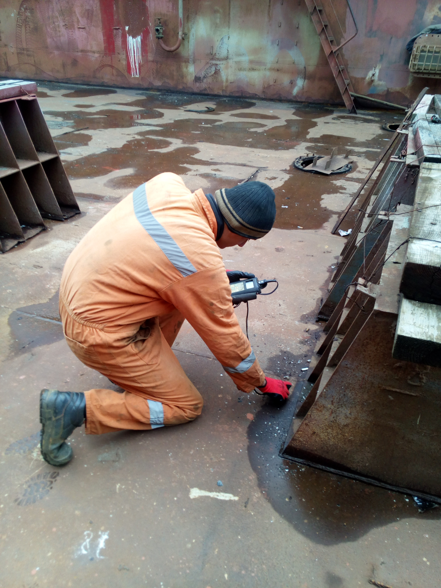
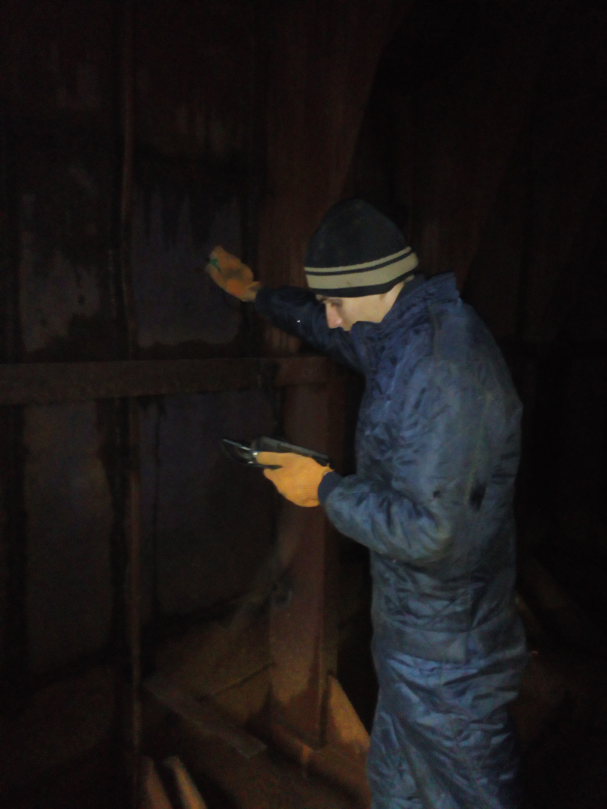
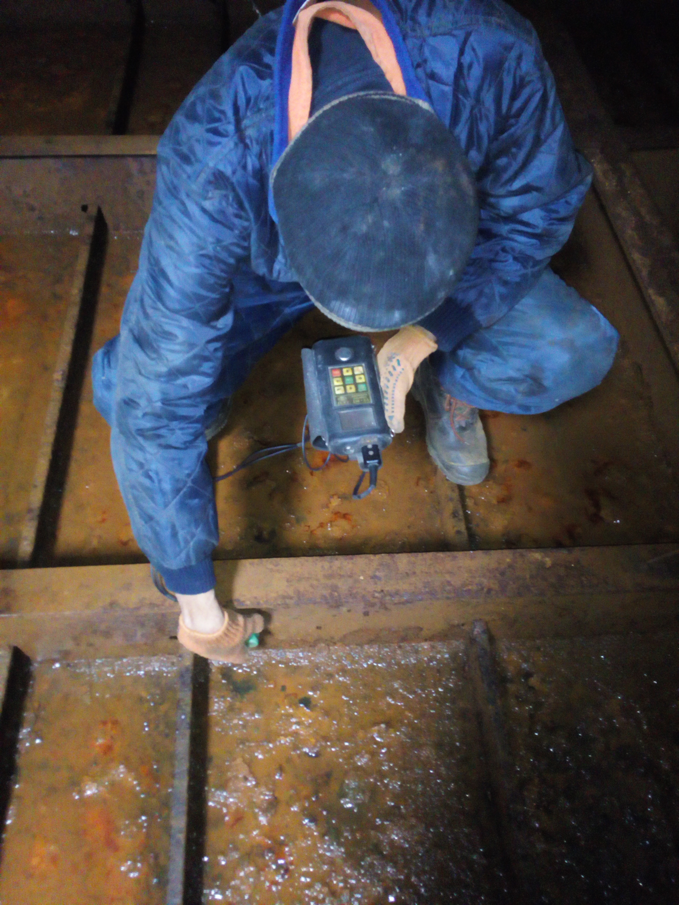
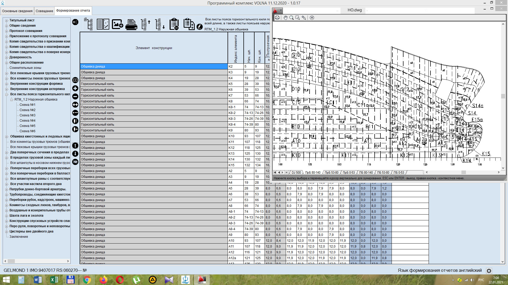
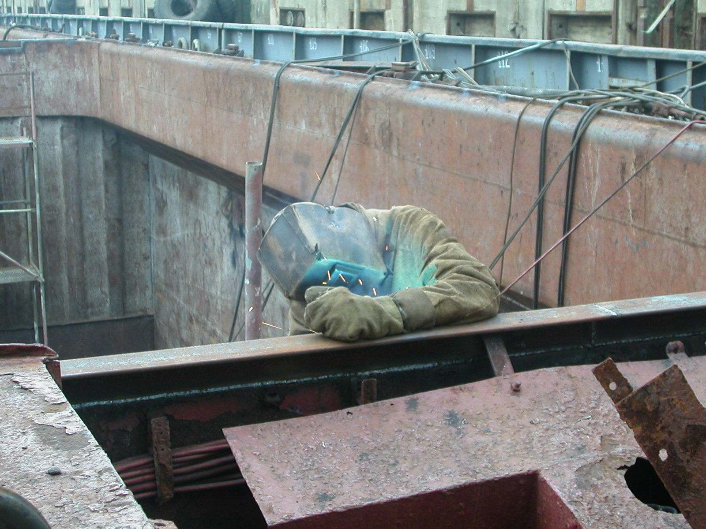

BSMSC “SLAVUTICH” Ltd.
BLACK SEA MULTI FIELD SHIPPING COMPANY
About company
The Slavutich company was founded in 1999 and operates in various sectors of the maritime industry.
The experience of our employees, the material and technical base of the company ensures the successful implementation of the tasks not only in Ukraine, but also in the territory of foreign ports, as well as at sea, during voyages.
The office of the company is located in Kherson сity close proximity to the SMART-MERITIME GROUP, which includes: Kherson shipyard, Kherson shipyard (KhSSRZ) named after Comintern and Kherson shipyard named after Kuibyshev (SHIPYARD 1930). Most of the company's employees work with ships that are being repaired at these factories. The company also regularly cooperates with the branches of the Classification Societies in Kherson: RS, SRU, INSB, PHOENIX. As a result of long-term work, close professional relations have developed with representatives of these enterprises at all levels. This allows us to quickly resolve issues and problems related to repair work on ships, efficiently, in a timely manner and in the shortest possible time.
The main areas of work of our company:
✓ Ultrasonic thickness measurement of ship hulls, measurements of residual thickness of hull structures, metal structures of ship devices, pipelines, cylinders, etc.
✓ Ship repair works: hull-welding works, repair and renovation of ship hull structures.
✓ Design and construct documents, preparing of ships operational documents.
The experience of our employees, the material and technical base of the company ensures the successful implementation of the tasks not only in Ukraine, but also in the territory of foreign ports, as well as at sea, during voyages.
The office of the company is located in Kherson сity close proximity to the SMART-MERITIME GROUP, which includes: Kherson shipyard, Kherson shipyard (KhSSRZ) named after Comintern and Kherson shipyard named after Kuibyshev (SHIPYARD 1930). Most of the company's employees work with ships that are being repaired at these factories. The company also regularly cooperates with the branches of the Classification Societies in Kherson: RS, SRU, INSB, PHOENIX. As a result of long-term work, close professional relations have developed with representatives of these enterprises at all levels. This allows us to quickly resolve issues and problems related to repair work on ships, efficiently, in a timely manner and in the shortest possible time.
The main areas of work of our company:
✓ Ultrasonic thickness measurement of ship hulls, measurements of residual thickness of hull structures, metal structures of ship devices, pipelines, cylinders, etc.
✓ Ship repair works: hull-welding works, repair and renovation of ship hull structures.
✓ Design and construct documents, preparing of ships operational documents.
Representative offices of the company are locate in Kherson, Odessa and Mariupol.
Services
1. Measurements of residual thickness of ship structures.
Our company carries out work on flaw detection of ship hulls with measurements of residual thickness.
The company's employees performing flaw detection are certified to work on ships of various types, both at shipyards and during voyages, performing pre-repair flaw detection and preparing the vessel for repair at the shipyard.
The company is certified by classification societies for the right to perform residual thickness measurements.
Thickness measurements are carried out using ultrasonic devices, which allow you to preserve the paintwork of structures. Based on the results of defect detection, technological instructions for repair are drawn up, with a description of the parameters of the areas being repaired, including weight characteristics. At the same time, economical and technological repair methods are used, both the requirements of the Register Class and the wishes of the shipowner are taken into account.
Based on the results of measurements of residual thicknesses, a "Report on measurements of residual thicknesses" is drawn up in the scope of the class requirements. The "report" is sent to the shipowner for review and agreed with the class inspector..
In the process of ship repair, our employees carry out technological support and control over the implementation of repair work, promptly resolve issues that arise with representatives of the shipyard and the Register Class.
The company performs work related to the determination of the technical condition of the vessel:
- expert assessment of the technical condition of the ship's hull at the request of the shipowner, including a photo report;
- inspection of the vessel as a result of accidental damage and the development of recommendations for repair;
- pre-sale inspection of the vessel at the request of the buying company.
- 
-

- 
- 
-

- 
2. PERFORMANCE OF CASE-WELDING REPAIR WORKS.
✓Organization of repair teams to carry out repairs of ship structures during voyages.
✓Performance of repairs to structures in ports as a result of emergency damage.
✓Performance of repair work at shipyards.
✓Manufacturing and installation of ballast water treatment plants.
✓Welding works. The welders of our company have certificates of classification societies that meet international standards, as well as work experience in ship repair from 10 to 20 years.
-

- 
-

3. Design and construct work.
Experienced constructors of our company develop a large amount of design documentation, the list of which is given below:
✓Freeboard calculation;
✓Evaluation of options for increasing the vessel load capacity;
✓Stability calculation;
✓Damage stability calculation;
✓Manoeuvring booklet;
✓Inclining test(Report of Inclining test);
✓Hull strength calculation;
✓Grain stability calculation;
✓Loading manual;
✓Emergency towing booklet;
✓Towing instructions for captain of tug;
✓Justification of ship conveyance outside the permitted area;
✓Sounding tables of ballast and store tanks;
✓Analysis of dangerous cargoes carriage by sea in accordance with IMDG code and materials hazardous only in bulk (MHB) in accordance with BC code;
✓Training manual and on-board training aids (Prepared in accordance with SOLAS 74 Convention 35, Chapter V, Section III, Part B);
✓Instruction for on-board maintenance of life-saving appliances (Prepared in accordance with SOLAS 74 Convention 36, Chapter V, Section III, Part B);
✓Shipboard garbage management plan (Prepared in accordance with MARPOL 73/78 Convention, Annex V, Regulation 9 and Resolution MERS 65(37) from 14.09.95);
✓Garbage record book;
✓Ship security plan (Prepared in accordance with International Ship and Port Facility Security (ISPS Code; Resolution 2 adopted on12 December 2002));
✓The report on carrying out of the ship security assessment (Prepared in accordance with International Ship and Port Facility Security (ISPS Code; Resolution 2 adopted on12 December 2002));
✓Ship security assessment (Prepared in accordance with International Ship and Port Facility Security (ISPS Code; Resolution 2 adopted on12 December 2002));
✓Ships key log book;
✓Visitors log book;
✓Ships searching log book;
✓Shipboard oil pollution emergency plan SOPEP (part 1) (Prepared in accordance with the requirements of Regulation 26 of Annex I of MARPOL 73/78, Resolution MEPC.54(32) adopted on 06.03.1992 and Resolution MEPC.86(44) adopted on 13.03.2000);
✓Shipboard oil pollution emergency plan SOPEP (part 2) (contact address);
✓Fire safety training manual and operational booklet (Prepared in accordance with Regulations 14, 15, 16 Part Е Chapter II-2 IC SOLAS-74 with 2000 Amendments (Resolution MSC.99(73));
✓Maintenance plan for fire protection system and appliances (Prepared in accordance with Regulations 14, 15, 16 Part Е Chapter II-2 IC SOLAS-74 with 2000 Amendments (Resolution MSC.99(73));
✓Check of strength of fore deck fittings and equipment in accordance with requirements IACS S27.
Certification
The "Slavutich" company is recognized for measuring the thickness of such Classification communities as SRU, MSR. The
company has a quality system certificate ISO 9001:2015.


Contacts
Phones
General Manager Yuriy Bilenko
+38 (050) 396-66-91
+38 (050) 396-66-91
Technical Manager Anatoliy Suvorov
+38 (066) 571-53-48
+38 (066) 571-53-48
Head office in Kherson
+38 (050) 396-66-91
+38 (050) 396-66-91
Branch in Odessa
+38 (050) 560-12-00
+38 (050) 560-12-00
Branch in Mariupol
+38 (050) 600-28-97
+38(098)383-90-68
+38 (050) 600-28-97
+38(098)383-90-68
E-mail address
e-mail: slavutich_99@yahoo.com
slavutich.od@gmail.com
Head office address
73000, Kherson region, Kherson, Quarantine Island, 1.